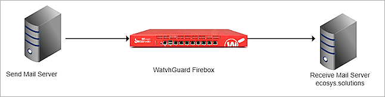
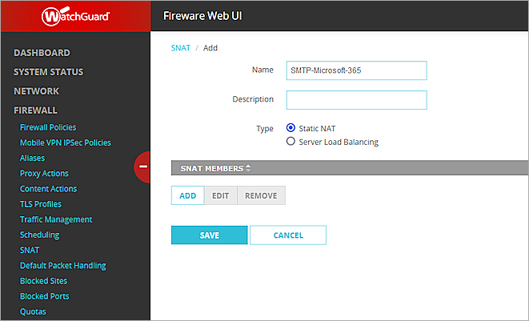
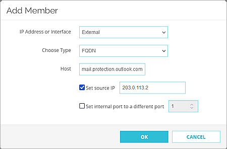
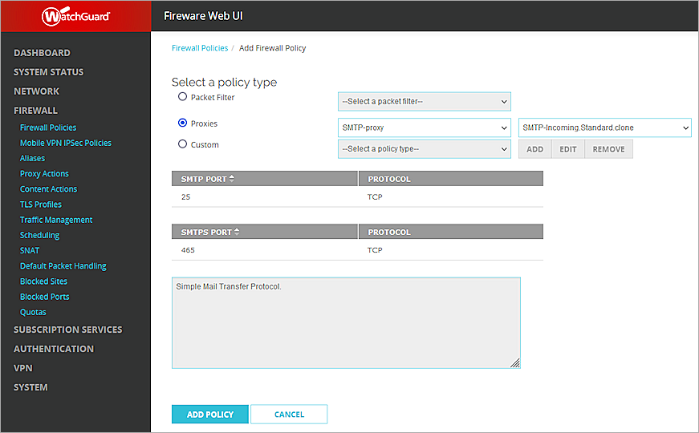
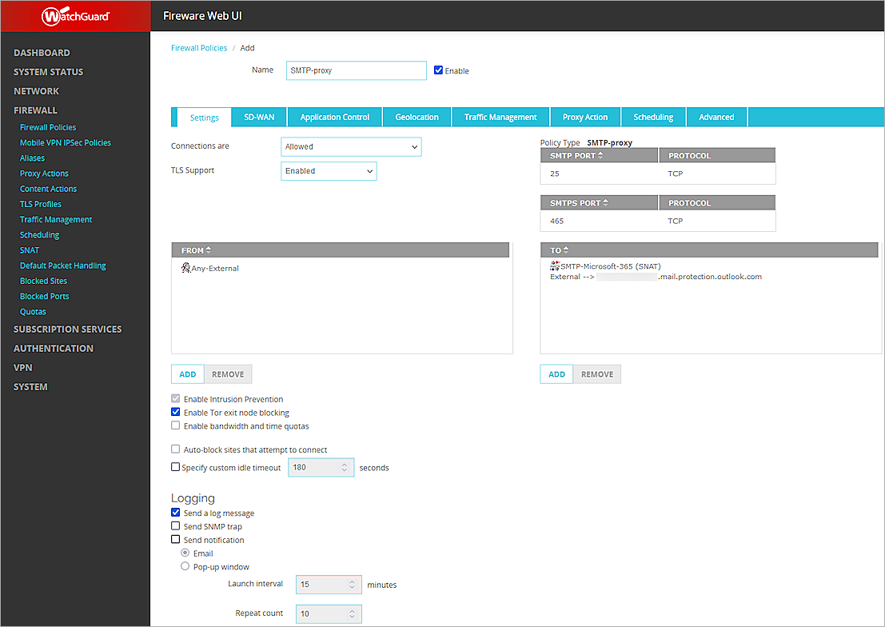

WatchGuard provides integration instructions to help our customers configure WatchGuard products to work with products created by other organizations. If you need more information or technical support about how to configure a third-party product, refer to the documentation and support resources for that product.
This integration guide describes how to configure the Firebox to filter emails before they reach the Microsoft 365 Mail Server.
Contents
Platform and Software
The platform and software used in this guide include:
- WatchGuard Firebox with Fireware v12.10 or higher
- Microsoft 365 subscription
- DNS Hosting provider
Integration Topology

Before You Begin
Before you begin these procedures, make sure that:
- Microsoft 365 Mail Server MX records are added in the DNS hosting provider.
- Microsoft 365 has added the domain (ecosys.solutions).
- Microsoft 365 Mail Server can send and receive mail using the domain (ecosys.solutions).
Configure Your Firebox for Microsoft 365
On the Firebox, add an SMTP-proxy policy with a static NAT action, and enable content inspection in the proxy action.
Add a Static NAT
To add a static NAT, from Fireware Web UI:
- Log in with an administrative account.
- Select Firewall > SNAT.
- To add a new SNAT, click Add.
The Add SNAT page opens.

- In the Name text box, enter a name for the SNAT.
- Select Static NAT.
- Click Add.
The Add Member dialog box opens.

- From the IP Address or Interface drop-down list, select External or select an external IP address.
- From the Choose Type drop-down list, select FQDN.
- In the Host text box, type or paste your Microsoft 365 domain MX record in the format: <Your Domain>.mail.protection.outlook.com.
- Select the Set Source IP check box and enter your external IP address.
- Click OK.
Add an SMTP Proxy Action
Because you cannot edit predefined proxy actions, you must clone a proxy action to customize the configuration.
To add an SMTP proxy action, from Fireware Web UI:
- Log in with an administrative account.
- Select Firewall > Proxy Actions.
The Proxy Actions page opens.

- Click SMTP-Incoming.Standard (Predefined).
- Click Clone.
- In the Name text box, enter a name for the proxy action.

- Select ESMTP > STARTTLS Encryption.

- Select the Enable STARTTLS with Content Inspection check box.
- Select ESMTP > Authentication.

- From the Action to take if no rule above is matched drop-down list, select Allow.
- Click Save.
Add an SMTP-Proxy Policy
To add an SMTP-Proxy policy, from Fireware Web UI:
- Select Firewall > Firewall Policies > Add Policy.
- Select Proxies, then select SMTP-proxy from the first adjacent drop-down list.
- From the second adjacent drop-down list, select the SMTP proxy action you added. In this example, select SMTP-Incoming.Standard.clone.

- Click Add Policy.
The Firewall Policies / Add page opens. - Remove all members from the From and To Lists.
- In the From list, click Add, then add a source with the alias Any-External.
- In the To list, click Add, then add a destination with a Member type of Static NAT, and select the SNAT you added for this integration.
- Leave the default value for all other settings.

- Click Save.
Update the Domain MX Record
After you save the SMTP proxy with the SNAT to Microsoft 365, you must update your email domain MX record to point to a host name that resolves to the Firebox external IP address.
Test the Integration
Verify that the Microsoft 365 Mail Server can receive the mail filtered by your Firebox with the domain (ecosys.solutions).